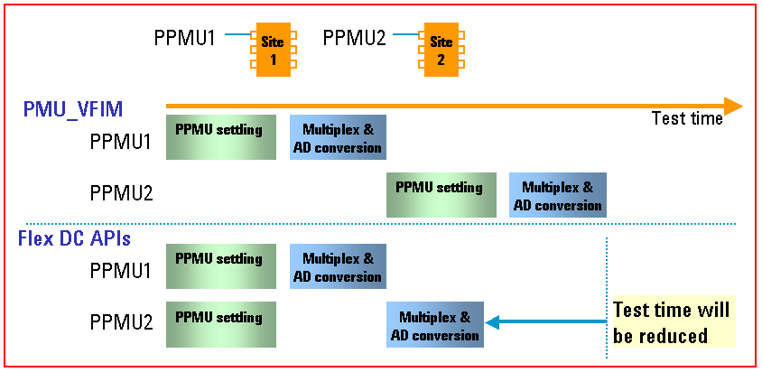
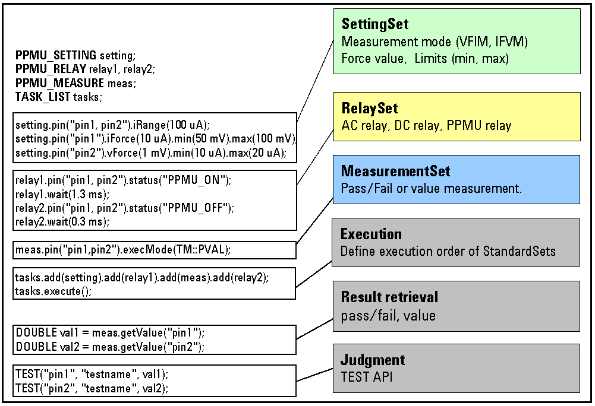

Flex DC
The test method Flex DC API allows you to do parallel tests in a multisite setup.
This is illustrated in the following figure:

To reduce test times, you should ask yourself whether you need a value for a DC measurement.
If you do not measure a value, the per board (pin) ADC is not required and, hence, the time is shorter. Acquiring a measured value results in a serial operation per pin.
The following is an example of a well designed Flex DC setup:

Example
The following shows a comparison of various measuring methods from a sample production test program:
- DC measurement using SPMU: 80 ms
- DC measurement using PPMU Flex DC with a value: 42 ms
- DC measurement using PPMU Flex DC with NO value: 12 ms
The reason for this saving, is that acquiring a measured value per pin is a serial operation (using the per board ADC).
The following APIs can be replaced by Flex DC to save test time:
- PMU_IFVM
- PMU_VFIM
- DPS_VFIM
- PMU_AUTORANGE
Functional changes
- Introduced before SmarTest 6.3.2